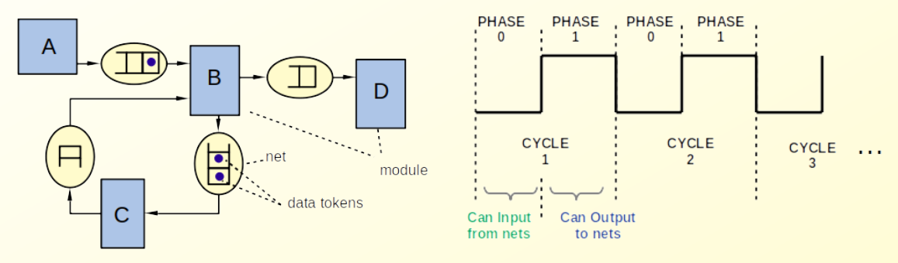

Time in Sitar¶
Sitar is a cycle-based simulator. Time advances in discrete steps called clock cycles. Each cycle is subdivided into exactly two phases: phase 0 and phase 1. Simulation time is always expressed as a (cycle, phase) pair.
The (cycle, phase) Time Representation¶
Time advances strictly in the order:

Inside a model, the current time is accessible as a variable current_time within a module. The cycle and phase components can be read individually using current_time.cycle() and current_time.phase():
The built-in keywords current_time, this_cycle and this_phase provide direct access:
wait until (this_phase == 1);
wait until (this_cycle >= 10);
wait until (current_time >= time(10,0));
The Two-Phase Rule¶
The two-phase subdivision is not just bookkeeping. It encodes a fundamental constraint on module behavior:
The Two-Phase Rule
A module may only read tokens from a net (pull) during phase 0. It may only write tokens to a net (push) during phase 1.
Token transfer between modules uses push (write) and pull (read) operations on ports. These are described in detail in Tokens.
This rule guarantees that within a single cycle, no module can both write to a net and have another module observe that write in the same phase. All state changes to nets occur in a deterministic, race-free order regardless of the sequence in which modules are executed.
A direct consequence of this rule is that communication between two modules over a net always incurs a minimum latency of one full clock cycle. A token pushed in phase 1 of cycle N can only be pulled in phase 0 of cycle N+1 or later.
sequenceDiagram
participant Sender
participant Net
participant Receiver
Note over Sender,Receiver: Cycle N
Receiver->>Net: pull (phase 0) - net is empty
Sender->>Net: push token (phase 1)
Note over Sender,Receiver: Cycle N+1
Receiver->>Net: pull (phase 0) - token availableZero-latency communication
Components that must interact with zero latency can be placed together inside a single module as branches of a parallel block. Within a module, branches execute in a fixed, deterministic order and may run multiple times within a phase until convergence. They are not subject to the one-cycle latency constraint that applies across nets.
See Module Behavior for an overview of parallel blocks, and Parallel for the full details.
Wait Statements¶
A module suspends its behavior using wait statements. There are three forms:
| Statement | Meaning |
|---|---|
wait; |
Advance by one phase (equivalent to wait(0,1)) |
wait(c, p); |
Advance by c full cycles and p additional phases |
wait until (expr); |
Suspend until the expression evaluates to true at the start of a phase |
Some examples:
wait; // (0,0) -> (0,1)
wait(1, 0); // (0,0) -> (1,0) advance one full cycle
wait(2, 1); // (0,0) -> (2,1) advance two cycles and one phase
wait until (this_phase == 1); // suspend until phase 1
wait until (this_cycle >= 10); // suspend until cycle 10 or later
wait until (current_time == time(5,0)); // suspend until exactly (5,0)
wait until ($x==10$); //suspend until the variable x becomes equal to 10
//at the start of a phase
Note
wait(0,0) is a zero-delay wait. It does not advance time, but it does yield execution back to the scheduler within the current phase. This is useful inside do-while loops to prevent an infinite spin within a single phase.
What's Next¶
Now that we understand when things happen, let's look at how a module describes what it does. Proceed to Module Behavior.